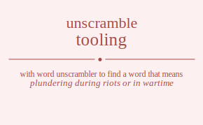

The word found after unscrambling tooling means that plundering during riots or in wartime, take illegally; of intellectual property, steal goods; take as spoils, .

The word found after unscrambling tooling means that plundering during riots or in wartime, take illegally; of intellectual property, steal goods; take as spoils, .
You can also find solutions for different combinations of letters in tooling like tooling toolign toolnig toolngi toolgin toolgni tooilng tooilgn tooinlg tooingl tooigln tooignl toonlig toonlgi toonilg toonigl toongli toongil tooglin tooglni toogiln tooginl toognli toognil toloing toloign tolonig tolongi tologin tologni toliong toliogn tolinog tolingo toligon toligno tolnoig tolnogi tolniog tolnigo tolngoi tolngio tolgoin tolgoni tolgion tolgino tolgnoi tolgnio toiolng toiolgn toionlg toiongl toiogln toiognl toilong toilogn toilnog toilngo toilgon toilgno toinolg toinogl toinlog toinlgo toingol toinglo toigoln toigonl toiglon toiglno toignol toignlo tonolig tonolgi tonoilg tonoigl tonogli tonogil tonloig tonlogi tonliog tonligo tonlgoi tonlgio toniolg toniogl tonilog tonilgo tonigol toniglo tongoli tongoil tongloi tonglio tongiol tongilo togolin togolni togoiln togoinl togonli togonil togloin togloni toglion toglino toglnoi toglnio togioln togionl togilon togilno toginol toginlo tognoli tognoil tognloi tognlio togniol tognilo tooling toolign toolnig toolngi toolgin toolgni tooilng tooilgn tooinlg tooingl tooigln tooignl toonlig toonlgi toonilg toonigl toongli toongil tooglin tooglni toogiln tooginl toognli toognil toloing toloign tolonig tolongi tologin tologni toliong toliogn tolinog tolingo toligon toligno tolnoig tolnogi tolniog tolnigo tolngoi tolngio tolgoin tolgoni tolgion tolgino tolgnoi tolgnio toiolng toiolgn toionlg toiongl toiogln toiognl toilong toilogn toilnog toilngo toilgon toilgno toinolg toinogl toinlog toinlgo toingol toinglo toigoln toigonl toiglon toiglno toignol toignlo tonolig tonolgi tonoilg tonoigl tonogli tonogil tonloig tonlogi tonliog tonligo tonlgoi tonlgio toniolg toniogl tonilog tonilgo tonigol toniglo tongoli tongoil tongloi tonglio tongiol tongilo togolin togolni togoiln togoinl togonli togonil togloin togloni toglion toglino toglnoi toglnio togioln togionl togilon togilno toginol toginlo tognoli tognoil tognloi tognlio togniol tognilo tlooing tlooign tloonig tloongi tloogin tloogni tloiong tloiogn tloinog tloingo tloigon tloigno tlonoig tlonogi tloniog tlonigo tlongoi tlongio tlogoin tlogoni tlogion tlogino tlognoi tlognio tlooing tlooign tloonig tloongi tloogin tloogni tloiong tloiogn tloinog tloingo tloigon tloigno tlonoig tlonogi tloniog tlonigo tlongoi tlongio tlogoin tlogoni tlogion tlogino tlognoi tlognio tlioong tlioogn tlionog tliongo tliogon tliogno tlioong tlioogn tlionog tliongo tliogon tliogno tlinoog tlinogo tlinoog tlinogo tlingoo tlingoo tligoon tligono tligoon tligono tlignoo tlignoo tlnooig tlnoogi tlnoiog tlnoigo tlnogoi tlnogio tlnooig tlnoogi tlnoiog tlnoigo tlnogoi tlnogio tlnioog tlniogo tlnioog tlniogo tlnigoo tlnigoo tlngooi tlngoio tlngooi tlngoio tlngioo tlngioo tlgooin tlgooni tlgoion tlgoino tlgonoi tlgonio tlgooin tlgooni tlgoion tlgoino tlgonoi tlgonio tlgioon tlgiono tlgioon tlgiono tlginoo tlginoo tlgnooi tlgnoio tlgnooi tlgnoio tlgnioo tlgnioo tioolng tioolgn tioonlg tioongl tioogln tioognl tiolong tiologn tiolnog tiolngo tiolgon tiolgno tionolg tionogl tionlog tionlgo tiongol tionglo tiogoln tiogonl tioglon tioglno tiognol tiognlo tioolng tioolgn tioonlg tioongl tioogln tioognl tiolong tiologn tiolnog tiolngo tiolgon tiolgno tionolg tionogl tionlog tionlgo tiongol tionglo tiogoln tiogonl tioglon tioglno tiognol tiognlo tiloong tiloogn tilonog tilongo tilogon tilogno tiloong tiloogn tilonog tilongo tilogon tilogno tilnoog tilnogo tilnoog tilnogo tilngoo tilngoo tilgoon tilgono tilgoon tilgono tilgnoo tilgnoo tinoolg tinoogl tinolog tinolgo tinogol tinoglo tinoolg tinoogl tinolog tinolgo tinogol tinoglo tinloog tinlogo tinloog tinlogo tinlgoo tinlgoo tingool tingolo tingool tingolo tingloo tingloo tigooln tigoonl tigolon tigolno tigonol tigonlo tigooln tigoonl tigolon tigolno tigonol tigonlo tigloon tiglono tigloon tiglono tiglnoo tiglnoo tignool tignolo tignool tignolo tignloo tignloo tnoolig tnoolgi tnooilg tnooigl tnoogli tnoogil tnoloig tnologi tnoliog tnoligo tnolgoi tnolgio tnoiolg tnoiogl tnoilog tnoilgo tnoigol tnoiglo tnogoli tnogoil tnogloi tnoglio tnogiol tnogilo tnoolig tnoolgi tnooilg tnooigl tnoogli tnoogil tnoloig tnologi tnoliog tnoligo tnolgoi tnolgio tnoiolg tnoiogl tnoilog tnoilgo tnoigol tnoiglo tnogoli tnogoil tnogloi tnoglio tnogiol tnogilo tnlooig tnloogi tnloiog tnloigo tnlogoi tnlogio tnlooig tnloogi tnloiog tnloigo tnlogoi tnlogio tnlioog tnliogo tnlioog tnliogo tnligoo tnligoo tnlgooi tnlgoio tnlgooi tnlgoio tnlgioo tnlgioo tnioolg tnioogl tniolog tniolgo tniogol tnioglo tnioolg tnioogl tniolog tniolgo tniogol tnioglo tniloog tnilogo tniloog tnilogo tnilgoo tnilgoo tnigool tnigolo tnigool tnigolo tnigloo tnigloo tngooli tngooil tngoloi tngolio tngoiol tngoilo tngooli tngooil tngoloi tngolio tngoiol tngoilo tnglooi tngloio tnglooi tngloio tnglioo tnglioo tngiool tngiolo tngiool tngiolo tngiloo tngiloo tgoolin tgoolni tgooiln tgooinl tgoonli tgoonil tgoloin tgoloni tgolion tgolino tgolnoi tgolnio tgoioln tgoionl tgoilon tgoilno tgoinol tgoinlo tgonoli tgonoil tgonloi tgonlio tgoniol tgonilo tgoolin tgoolni tgooiln tgooinl tgoonli tgoonil tgoloin tgoloni tgolion tgolino tgolnoi tgolnio tgoioln tgoionl tgoilon tgoilno tgoinol tgoinlo tgonoli tgonoil tgonloi tgonlio tgoniol tgonilo tglooin tglooni tgloion tgloino tglonoi tglonio tglooin tglooni tgloion tgloino tglonoi tglonio tglioon tgliono tglioon tgliono tglinoo tglinoo tglnooi tglnoio tglnooi tglnoio tglnioo tglnioo tgiooln tgioonl tgiolon tgiolno tgionol tgionlo tgiooln tgioonl tgiolon tgiolno tgionol tgionlo tgiloon tgilono tgiloon tgilono tgilnoo tgilnoo tginool tginolo tginool tginolo tginloo tginloo tgnooli tgnooil tgnoloi tgnolio tgnoiol tgnoilo tgnooli tgnooil tgnoloi tgnolio tgnoiol tgnoilo tgnlooi tgnloio tgnlooi tgnloio tgnlioo tgnlioo tgniool tgniolo tgniool tgniolo tgniloo tgniloo otoling otolign otolnig otolngi otolgin otolgni otoilng otoilgn otoinlg otoingl otoigln otoignl otonlig otonlgi otonilg otonigl otongli otongil otoglin otoglni otogiln otoginl otognli otognil otloing otloign otlonig otlongi otlogin otlogni otliong otliogn otlinog otlingo otligon otligno otlnoig otlnogi otlniog otlnigo otlngoi otlngio otlgoin otlgoni otlgion otlgino otlgnoi otlgnio otiolng otiolgn otionlg otiongl otiogln otiognl otilong otilogn otilnog otilngo otilgon otilgno otinolg otinogl otinlog otinlgo otingol otinglo otigoln otigonl otiglon otiglno otignol otignlo otnolig otnolgi otnoilg otnoigl otnogli otnogil otnloig otnlogi otnliog otnligo otnlgoi otnlgio otniolg otniogl otnilog otnilgo otnigol otniglo otngoli otngoil otngloi otnglio otngiol otngilo otgolin otgolni otgoiln otgoinl otgonli otgonil otgloin otgloni otglion otglino otglnoi otglnio otgioln otgionl otgilon otgilno otginol otginlo otgnoli otgnoil otgnloi otgnlio otgniol otgnilo ootling ootlign ootlnig ootlngi ootlgin ootlgni ootilng ootilgn ootinlg ootingl ootigln ootignl ootnlig ootnlgi ootnilg ootnigl ootngli ootngil ootglin ootglni ootgiln ootginl ootgnli ootgnil oolting ooltign ooltnig ooltngi ooltgin ooltgni oolitng oolitgn oolintg oolingt ooligtn oolignt oolntig oolntgi oolnitg oolnigt oolngti oolngit oolgtin oolgtni oolgitn oolgint oolgnti oolgnit ooitlng ooitlgn ooitnlg ooitngl ooitgln ooitgnl ooiltng ooiltgn ooilntg ooilngt ooilgtn ooilgnt oointlg oointgl ooinltg ooinlgt ooingtl ooinglt ooigtln ooigtnl ooigltn ooiglnt ooigntl ooignlt oontlig oontlgi oontilg oontigl oontgli oontgil oonltig oonltgi oonlitg oonligt oonlgti oonlgit oonitlg oonitgl ooniltg oonilgt oonigtl ooniglt oongtli oongtil oonglti oonglit oongitl oongilt oogtlin oogtlni oogtiln oogtinl oogtnli oogtnil oogltin oogltni ooglitn ooglint ooglnti ooglnit oogitln oogitnl oogiltn oogilnt oogintl ooginlt oogntli oogntil oognlti oognlit oognitl oognilt oltoing oltoign oltonig oltongi oltogin oltogni oltiong oltiogn oltinog oltingo oltigon oltigno oltnoig oltnogi oltniog oltnigo oltngoi oltngio oltgoin oltgoni oltgion oltgino oltgnoi oltgnio oloting olotign olotnig olotngi olotgin olotgni oloitng oloitgn olointg oloingt oloigtn oloignt olontig olontgi olonitg olonigt olongti olongit ologtin ologtni ologitn ologint olognti olognit olitong olitogn olitnog olitngo olitgon olitgno oliotng oliotgn oliontg oliongt oliogtn oliognt olintog olintgo olinotg olinogt olingto olingot oligton oligtno oligotn oligont olignto olignot olntoig olntogi olntiog olntigo olntgoi olntgio olnotig olnotgi olnoitg olnoigt olnogti olnogit olnitog olnitgo olniotg olniogt olnigto olnigot olngtoi olngtio olngoti olngoit olngito olngiot olgtoin olgtoni olgtion olgtino olgtnoi olgtnio olgotin olgotni olgoitn olgoint olgonti olgonit olgiton olgitno olgiotn olgiont olginto olginot olgntoi olgntio olgnoti olgnoit olgnito olgniot oitolng oitolgn oitonlg oitongl oitogln oitognl oitlong oitlogn oitlnog oitlngo oitlgon oitlgno oitnolg oitnogl oitnlog oitnlgo oitngol oitnglo oitgoln oitgonl oitglon oitglno oitgnol oitgnlo oiotlng oiotlgn oiotnlg oiotngl oiotgln oiotgnl oioltng oioltgn oiolntg oiolngt oiolgtn oiolgnt oiontlg oiontgl oionltg oionlgt oiongtl oionglt oiogtln oiogtnl oiogltn oioglnt oiogntl oiognlt oiltong oiltogn oiltnog oiltngo oiltgon oiltgno oilotng oilotgn oilontg oilongt oilogtn oilognt oilntog oilntgo oilnotg oilnogt oilngto oilngot oilgton oilgtno oilgotn oilgont oilgnto oilgnot ointolg ointogl ointlog ointlgo ointgol ointglo oinotlg oinotgl oinoltg oinolgt oinogtl oinoglt oinltog oinltgo oinlotg oinlogt oinlgto oinlgot oingtol oingtlo oingotl oingolt oinglto oinglot oigtoln oigtonl oigtlon oigtlno oigtnol oigtnlo oigotln oigotnl oigoltn oigolnt oigontl oigonlt oiglton oigltno oiglotn oiglont oiglnto oiglnot oigntol oigntlo oignotl oignolt oignlto oignlot ontolig ontolgi ontoilg ontoigl ontogli ontogil ontloig ontlogi ontliog ontligo ontlgoi ontlgio ontiolg ontiogl ontilog ontilgo ontigol ontiglo ontgoli ontgoil ontgloi ontglio ontgiol ontgilo onotlig onotlgi onotilg onotigl onotgli onotgil onoltig onoltgi onolitg onoligt onolgti onolgit onoitlg onoitgl onoiltg onoilgt onoigtl onoiglt onogtli onogtil onoglti onoglit onogitl onogilt onltoig onltogi onltiog onltigo onltgoi onltgio onlotig onlotgi onloitg onloigt onlogti onlogit onlitog onlitgo onliotg onliogt onligto onligot onlgtoi onlgtio onlgoti onlgoit onlgito onlgiot onitolg onitogl onitlog onitlgo onitgol onitglo oniotlg oniotgl onioltg oniolgt oniogtl onioglt oniltog oniltgo onilotg onilogt onilgto onilgot onigtol onigtlo onigotl onigolt oniglto oniglot ongtoli ongtoil ongtloi ongtlio ongtiol ongtilo ongotli ongotil ongolti ongolit ongoitl ongoilt ongltoi ongltio ongloti ongloit onglito ongliot ongitol ongitlo ongiotl ongiolt ongilto ongilot ogtolin ogtolni ogtoiln ogtoinl ogtonli ogtonil ogtloin ogtloni ogtlion ogtlino ogtlnoi ogtlnio ogtioln ogtionl ogtilon ogtilno ogtinol ogtinlo ogtnoli ogtnoil ogtnloi ogtnlio ogtniol ogtnilo ogotlin ogotlni ogotiln ogotinl ogotnli ogotnil ogoltin ogoltni ogolitn ogolint ogolnti ogolnit ogoitln ogoitnl ogoiltn ogoilnt ogointl ogoinlt ogontli ogontil ogonlti ogonlit ogonitl ogonilt ogltoin ogltoni ogltion ogltino ogltnoi ogltnio oglotin oglotni ogloitn ogloint oglonti oglonit ogliton oglitno ogliotn ogliont oglinto oglinot oglntoi oglntio oglnoti oglnoit oglnito oglniot ogitoln ogitonl ogitlon ogitlno ogitnol ogitnlo ogiotln ogiotnl ogioltn ogiolnt ogiontl ogionlt ogilton ogiltno ogilotn ogilont ogilnto ogilnot ogintol ogintlo oginotl oginolt oginlto oginlot ogntoli ogntoil ogntloi ogntlio ogntiol ogntilo ognotli ognotil ognolti ognolit ognoitl ognoilt ognltoi ognltio ognloti ognloit ognlito ognliot ognitol ognitlo ogniotl ogniolt ognilto ognilot otoling otolign otolnig otolngi otolgin otolgni otoilng otoilgn otoinlg otoingl otoigln otoignl otonlig otonlgi otonilg otonigl otongli otongil otoglin otoglni otogiln otoginl otognli otognil otloing otloign otlonig otlongi otlogin otlogni otliong otliogn otlinog otlingo otligon otligno otlnoig otlnogi otlniog otlnigo otlngoi otlngio otlgoin otlgoni otlgion otlgino otlgnoi otlgnio otiolng otiolgn otionlg otiongl otiogln otiognl otilong otilogn otilnog otilngo otilgon otilgno otinolg otinogl otinlog otinlgo otingol otinglo otigoln otigonl otiglon otiglno otignol otignlo otnolig otnolgi otnoilg otnoigl otnogli otnogil otnloig otnlogi otnliog otnligo otnlgoi otnlgio otniolg otniogl otnilog otnilgo otnigol otniglo otngoli otngoil otngloi otnglio otngiol otngilo otgolin otgolni otgoiln otgoinl otgonli otgonil otgloin otgloni otglion otglino otglnoi otglnio otgioln otgionl otgilon otgilno otginol otginlo otgnoli otgnoil otgnloi otgnlio otgniol otgnilo ootling ootlign ootlnig ootlngi ootlgin ootlgni ootilng ootilgn ootinlg ootingl ootigln ootignl ootnlig ootnlgi ootnilg ootnigl ootngli ootngil ootglin ootglni ootgiln ootginl ootgnli ootgnil oolting ooltign ooltnig ooltngi ooltgin ooltgni oolitng oolitgn oolintg oolingt ooligtn oolignt oolntig oolntgi oolnitg oolnigt oolngti oolngit oolgtin oolgtni oolgitn oolgint oolgnti oolgnit ooitlng ooitlgn ooitnlg ooitngl ooitgln ooitgnl ooiltng ooiltgn ooilntg ooilngt ooilgtn ooilgnt oointlg oointgl ooinltg ooinlgt ooingtl ooinglt ooigtln ooigtnl ooigltn ooiglnt ooigntl ooignlt oontlig oontlgi oontilg oontigl oontgli oontgil oonltig oonltgi oonlitg oonligt oonlgti oonlgit oonitlg oonitgl ooniltg oonilgt oonigtl ooniglt oongtli oongtil oonglti oonglit oongitl oongilt oogtlin oogtlni oogtiln oogtinl oogtnli oogtnil oogltin oogltni ooglitn ooglint ooglnti ooglnit oogitln oogitnl oogiltn oogilnt oogintl ooginlt oogntli oogntil oognlti oognlit oognitl oognilt oltoing oltoign oltonig oltongi oltogin oltogni oltiong oltiogn oltinog oltingo oltigon oltigno oltnoig oltnogi oltniog oltnigo oltngoi oltngio oltgoin oltgoni oltgion oltgino oltgnoi oltgnio oloting olotign olotnig olotngi olotgin olotgni oloitng oloitgn olointg oloingt oloigtn oloignt olontig olontgi olonitg olonigt olongti olongit ologtin ologtni ologitn ologint olognti olognit olitong olitogn olitnog olitngo olitgon olitgno oliotng oliotgn oliontg oliongt oliogtn oliognt olintog olintgo olinotg olinogt olingto olingot oligton oligtno oligotn oligont olignto olignot olntoig olntogi olntiog olntigo olntgoi olntgio olnotig olnotgi olnoitg olnoigt olnogti olnogit olnitog olnitgo olniotg olniogt olnigto olnigot olngtoi olngtio olngoti olngoit olngito olngiot olgtoin olgtoni olgtion olgtino olgtnoi olgtnio olgotin olgotni olgoitn olgoint olgonti olgonit olgiton olgitno olgiotn olgiont olginto olginot olgntoi olgntio olgnoti olgnoit olgnito olgniot oitolng oitolgn oitonlg oitongl oitogln oitognl oitlong oitlogn oitlnog oitlngo oitlgon oitlgno oitnolg oitnogl oitnlog oitnlgo oitngol oitnglo oitgoln oitgonl oitglon oitglno oitgnol oitgnlo oiotlng oiotlgn oiotnlg oiotngl oiotgln oiotgnl oioltng oioltgn oiolntg oiolngt oiolgtn oiolgnt oiontlg oiontgl oionltg oionlgt oiongtl oionglt oiogtln oiogtnl oiogltn oioglnt oiogntl oiognlt oiltong oiltogn oiltnog oiltngo oiltgon oiltgno oilotng oilotgn oilontg oilongt oilogtn oilognt oilntog oilntgo oilnotg oilnogt oilngto oilngot oilgton oilgtno oilgotn oilgont oilgnto oilgnot ointolg ointogl ointlog ointlgo ointgol ointglo oinotlg oinotgl oinoltg oinolgt oinogtl oinoglt oinltog oinltgo oinlotg oinlogt oinlgto oinlgot oingtol oingtlo oingotl oingolt oinglto oinglot oigtoln oigtonl oigtlon oigtlno oigtnol oigtnlo oigotln oigotnl oigoltn oigolnt oigontl oigonlt oiglton oigltno oiglotn oiglont oiglnto oiglnot oigntol oigntlo oignotl oignolt oignlto oignlot ontolig ontolgi ontoilg ontoigl ontogli ontogil ontloig ontlogi ontliog ontligo ontlgoi ontlgio ontiolg ontiogl ontilog ontilgo ontigol ontiglo ontgoli ontgoil ontgloi ontglio ontgiol ontgilo onotlig onotlgi onotilg onotigl onotgli onotgil onoltig onoltgi onolitg onoligt onolgti onolgit onoitlg onoitgl onoiltg onoilgt onoigtl onoiglt onogtli onogtil onoglti onoglit onogitl onogilt onltoig onltogi onltiog onltigo onltgoi onltgio onlotig onlotgi onloitg onloigt onlogti onlogit onlitog onlitgo onliotg onliogt onligto onligot onlgtoi onlgtio onlgoti onlgoit onlgito onlgiot onitolg onitogl onitlog onitlgo onitgol onitglo oniotlg oniotgl onioltg oniolgt oniogtl onioglt oniltog oniltgo onilotg onilogt onilgto onilgot onigtol onigtlo onigotl onigolt oniglto oniglot ongtoli ongtoil ongtloi ongtlio ongtiol ongtilo ongotli ongotil ongolti ongolit ongoitl ongoilt ongltoi ongltio ongloti ongloit onglito ongliot ongitol ongitlo ongiotl ongiolt ongilto ongilot ogtolin ogtolni ogtoiln ogtoinl ogtonli ogtonil ogtloin ogtloni ogtlion ogtlino ogtlnoi ogtlnio ogtioln ogtionl ogtilon ogtilno ogtinol ogtinlo ogtnoli ogtnoil ogtnloi ogtnlio ogtniol ogtnilo ogotlin ogotlni ogotiln ogotinl ogotnli ogotnil ogoltin ogoltni ogolitn ogolint ogolnti ogolnit ogoitln ogoitnl ogoiltn ogoilnt ogointl ogoinlt ogontli ogontil ogonlti ogonlit ogonitl ogonilt ogltoin ogltoni ogltion ogltino ogltnoi ogltnio oglotin oglotni ogloitn ogloint oglonti oglonit ogliton oglitno ogliotn ogliont oglinto oglinot oglntoi oglntio oglnoti oglnoit oglnito oglniot ogitoln ogitonl ogitlon ogitlno ogitnol ogitnlo ogiotln ogiotnl ogioltn ogiolnt ogiontl ogionlt ogilton ogiltno ogilotn ogilont ogilnto ogilnot ogintol ogintlo oginotl oginolt oginlto oginlot ogntoli ogntoil ogntloi ogntlio ogntiol ogntilo ognotli ognotil ognolti ognolit ognoitl ognoilt ognltoi ognltio ognloti ognloit ognlito ognliot ognitol ognitlo ogniotl ogniolt ognilto ognilot ltooing ltooign ltoonig ltoongi ltoogin ltoogni ltoiong ltoiogn ltoinog ltoingo ltoigon ltoigno ltonoig ltonogi ltoniog ltonigo ltongoi ltongio ltogoin ltogoni ltogion ltogino ltognoi ltognio ltooing ltooign ltoonig ltoongi ltoogin ltoogni ltoiong ltoiogn ltoinog ltoingo ltoigon ltoigno ltonoig ltonogi ltoniog ltonigo ltongoi ltongio ltogoin ltogoni ltogion ltogino ltognoi ltognio ltioong ltioogn ltionog ltiongo ltiogon ltiogno ltioong ltioogn ltionog ltiongo ltiogon ltiogno ltinoog ltinogo ltinoog ltinogo ltingoo ltingoo ltigoon ltigono ltigoon ltigono ltignoo ltignoo ltnooig ltnoogi ltnoiog ltnoigo ltnogoi ltnogio ltnooig ltnoogi ltnoiog ltnoigo ltnogoi ltnogio ltnioog ltniogo ltnioog ltniogo ltnigoo ltnigoo ltngooi ltngoio ltngooi ltngoio ltngioo ltngioo ltgooin ltgooni ltgoion ltgoino ltgonoi ltgonio ltgooin ltgooni ltgoion ltgoino ltgonoi ltgonio ltgioon ltgiono ltgioon ltgiono ltginoo ltginoo ltgnooi ltgnoio ltgnooi ltgnoio ltgnioo ltgnioo lotoing lotoign lotonig lotongi lotogin lotogni lotiong lotiogn lotinog lotingo lotigon lotigno lotnoig lotnogi lotniog lotnigo lotngoi lotngio lotgoin lotgoni lotgion lotgino lotgnoi lotgnio looting lootign lootnig lootngi lootgin lootgni looitng looitgn loointg looingt looigtn looignt loontig loontgi loonitg loonigt loongti loongit loogtin loogtni loogitn loogint loognti loognit loitong loitogn loitnog loitngo loitgon loitgno loiotng loiotgn loiontg loiongt loiogtn loiognt lointog lointgo loinotg loinogt loingto loingot loigton loigtno loigotn loigont loignto loignot lontoig lontogi lontiog lontigo lontgoi lontgio lonotig lonotgi lonoitg lonoigt lonogti lonogit lonitog lonitgo loniotg loniogt lonigto lonigot longtoi longtio longoti longoit longito longiot logtoin logtoni logtion logtino logtnoi logtnio logotin logotni logoitn logoint logonti logonit logiton logitno logiotn logiont loginto loginot logntoi logntio lognoti lognoit lognito logniot lotoing lotoign lotonig lotongi lotogin lotogni lotiong lotiogn lotinog lotingo lotigon lotigno lotnoig lotnogi lotniog lotnigo lotngoi lotngio lotgoin lotgoni lotgion lotgino lotgnoi lotgnio looting lootign lootnig lootngi lootgin lootgni looitng looitgn loointg looingt looigtn looignt loontig loontgi loonitg loonigt loongti loongit loogtin loogtni loogitn loogint loognti loognit loitong loitogn loitnog loitngo loitgon loitgno loiotng loiotgn loiontg loiongt loiogtn loiognt lointog lointgo loinotg loinogt loingto loingot loigton loigtno loigotn loigont loignto loignot lontoig lontogi lontiog lontigo lontgoi lontgio lonotig lonotgi lonoitg lonoigt lonogti lonogit lonitog lonitgo loniotg loniogt lonigto lonigot longtoi longtio longoti longoit longito longiot logtoin logtoni logtion logtino logtnoi logtnio logotin logotni logoitn logoint logonti logonit logiton logitno logiotn logiont loginto loginot logntoi logntio lognoti lognoit lognito logniot litoong litoogn litonog litongo litogon litogno litoong litoogn litonog litongo litogon litogno litnoog litnogo litnoog litnogo litngoo litngoo litgoon litgono litgoon litgono litgnoo litgnoo liotong liotogn liotnog liotngo liotgon liotgno liootng liootgn lioontg lioongt lioogtn lioognt liontog liontgo lionotg lionogt liongto liongot liogton liogtno liogotn liogont liognto liognot liotong liotogn liotnog liotngo liotgon liotgno liootng liootgn lioontg lioongt lioogtn lioognt liontog liontgo lionotg lionogt liongto liongot liogton liogtno liogotn liogont liognto liognot lintoog lintogo lintoog lintogo lintgoo lintgoo linotog linotgo linootg linoogt linogto linogot linotog linotgo linootg linoogt linogto linogot lingtoo lingtoo lingoto lingoot lingoto lingoot ligtoon ligtono ligtoon ligtono ligtnoo ligtnoo ligoton ligotno ligootn ligoont ligonto ligonot ligoton ligotno ligootn ligoont ligonto ligonot ligntoo ligntoo lignoto lignoot lignoto lignoot lntooig lntoogi lntoiog lntoigo lntogoi lntogio lntooig lntoogi lntoiog lntoigo lntogoi lntogio lntioog lntiogo lntioog lntiogo lntigoo lntigoo lntgooi lntgoio lntgooi lntgoio lntgioo lntgioo lnotoig lnotogi lnotiog lnotigo lnotgoi lnotgio lnootig lnootgi lnooitg lnooigt lnoogti lnoogit lnoitog lnoitgo lnoiotg lnoiogt lnoigto lnoigot lnogtoi lnogtio lnogoti lnogoit lnogito lnogiot lnotoig lnotogi lnotiog lnotigo lnotgoi lnotgio lnootig lnootgi lnooitg lnooigt lnoogti lnoogit lnoitog lnoitgo lnoiotg lnoiogt lnoigto lnoigot lnogtoi lnogtio lnogoti lnogoit lnogito lnogiot lnitoog lnitogo lnitoog lnitogo lnitgoo lnitgoo lniotog lniotgo lniootg lnioogt lniogto lniogot lniotog lniotgo lniootg lnioogt lniogto lniogot lnigtoo lnigtoo lnigoto lnigoot lnigoto lnigoot lngtooi lngtoio lngtooi lngtoio lngtioo lngtioo lngotoi lngotio lngooti lngooit lngoito lngoiot lngotoi lngotio lngooti lngooit lngoito lngoiot lngitoo lngitoo lngioto lngioot lngioto lngioot lgtooin lgtooni lgtoion lgtoino lgtonoi lgtonio lgtooin lgtooni lgtoion lgtoino lgtonoi lgtonio lgtioon lgtiono lgtioon lgtiono lgtinoo lgtinoo lgtnooi lgtnoio lgtnooi lgtnoio lgtnioo lgtnioo lgotoin lgotoni lgotion lgotino lgotnoi lgotnio lgootin lgootni lgooitn lgooint lgoonti lgoonit lgoiton lgoitno lgoiotn lgoiont lgointo lgoinot lgontoi lgontio lgonoti lgonoit lgonito lgoniot lgotoin lgotoni lgotion lgotino lgotnoi lgotnio lgootin lgootni lgooitn lgooint lgoonti lgoonit lgoiton lgoitno lgoiotn lgoiont lgointo lgoinot lgontoi lgontio lgonoti lgonoit lgonito lgoniot lgitoon lgitono lgitoon lgitono lgitnoo lgitnoo lgioton lgiotno lgiootn lgioont lgionto lgionot lgioton lgiotno lgiootn lgioont lgionto lgionot lgintoo lgintoo lginoto lginoot lginoto lginoot lgntooi lgntoio lgntooi lgntoio lgntioo lgntioo lgnotoi lgnotio lgnooti lgnooit lgnoito lgnoiot lgnotoi lgnotio lgnooti lgnooit lgnoito lgnoiot lgnitoo lgnitoo lgnioto lgnioot lgnioto lgnioot itoolng itoolgn itoonlg itoongl itoogln itoognl itolong itologn itolnog itolngo itolgon itolgno itonolg itonogl itonlog itonlgo itongol itonglo itogoln itogonl itoglon itoglno itognol itognlo itoolng itoolgn itoonlg itoongl itoogln itoognl itolong itologn itolnog itolngo itolgon itolgno itonolg itonogl itonlog itonlgo itongol itonglo itogoln itogonl itoglon itoglno itognol itognlo itloong itloogn itlonog itlongo itlogon itlogno itloong itloogn itlonog itlongo itlogon itlogno itlnoog itlnogo itlnoog itlnogo itlngoo itlngoo itlgoon itlgono itlgoon itlgono itlgnoo itlgnoo itnoolg itnoogl itnolog itnolgo itnogol itnoglo itnoolg itnoogl itnolog itnolgo itnogol itnoglo itnloog itnlogo itnloog itnlogo itnlgoo itnlgoo itngool itngolo itngool itngolo itngloo itngloo itgooln itgoonl itgolon itgolno itgonol itgonlo itgooln itgoonl itgolon itgolno itgonol itgonlo itgloon itglono itgloon itglono itglnoo itglnoo itgnool itgnolo itgnool itgnolo itgnloo itgnloo iotolng iotolgn iotonlg iotongl iotogln iotognl iotlong iotlogn iotlnog iotlngo iotlgon iotlgno iotnolg iotnogl iotnlog iotnlgo iotngol iotnglo iotgoln iotgonl iotglon iotglno iotgnol iotgnlo iootlng iootlgn iootnlg iootngl iootgln iootgnl iooltng iooltgn ioolntg ioolngt ioolgtn ioolgnt ioontlg ioontgl ioonltg ioonlgt ioongtl ioonglt ioogtln ioogtnl ioogltn iooglnt ioogntl ioognlt ioltong ioltogn ioltnog ioltngo ioltgon ioltgno iolotng iolotgn iolontg iolongt iologtn iolognt iolntog iolntgo iolnotg iolnogt iolngto iolngot iolgton iolgtno iolgotn iolgont iolgnto iolgnot iontolg iontogl iontlog iontlgo iontgol iontglo ionotlg ionotgl ionoltg ionolgt ionogtl ionoglt ionltog ionltgo ionlotg ionlogt ionlgto ionlgot iongtol iongtlo iongotl iongolt ionglto ionglot iogtoln iogtonl iogtlon iogtlno iogtnol iogtnlo iogotln iogotnl iogoltn iogolnt iogontl iogonlt ioglton iogltno ioglotn ioglont ioglnto ioglnot iogntol iogntlo iognotl iognolt iognlto iognlot iotolng iotolgn iotonlg iotongl iotogln iotognl iotlong iotlogn iotlnog iotlngo iotlgon iotlgno iotnolg iotnogl iotnlog iotnlgo iotngol iotnglo iotgoln iotgonl iotglon iotglno iotgnol iotgnlo iootlng iootlgn iootnlg iootngl iootgln iootgnl iooltng iooltgn ioolntg ioolngt ioolgtn ioolgnt ioontlg ioontgl ioonltg ioonlgt ioongtl ioonglt ioogtln ioogtnl ioogltn iooglnt ioogntl ioognlt ioltong ioltogn ioltnog ioltngo ioltgon ioltgno iolotng iolotgn iolontg iolongt iologtn iolognt iolntog iolntgo iolnotg iolnogt iolngto iolngot iolgton iolgtno iolgotn iolgont iolgnto iolgnot iontolg iontogl iontlog iontlgo iontgol iontglo ionotlg ionotgl ionoltg ionolgt ionogtl ionoglt ionltog ionltgo ionlotg ionlogt ionlgto ionlgot iongtol iongtlo iongotl iongolt ionglto ionglot iogtoln iogtonl iogtlon iogtlno iogtnol iogtnlo iogotln iogotnl iogoltn iogolnt iogontl iogonlt ioglton iogltno ioglotn ioglont ioglnto ioglnot iogntol iogntlo iognotl iognolt iognlto iognlot iltoong iltoogn iltonog iltongo iltogon iltogno iltoong iltoogn iltonog iltongo iltogon iltogno iltnoog iltnogo iltnoog iltnogo iltngoo iltngoo iltgoon iltgono iltgoon iltgono iltgnoo iltgnoo ilotong ilotogn ilotnog ilotngo ilotgon ilotgno ilootng ilootgn iloontg iloongt iloogtn iloognt ilontog ilontgo ilonotg ilonogt ilongto ilongot ilogton ilogtno ilogotn ilogont ilognto ilognot ilotong ilotogn ilotnog ilotngo ilotgon ilotgno ilootng ilootgn iloontg iloongt iloogtn iloognt ilontog ilontgo ilonotg ilonogt ilongto ilongot ilogton ilogtno ilogotn ilogont ilognto ilognot ilntoog ilntogo ilntoog ilntogo ilntgoo ilntgoo ilnotog ilnotgo ilnootg ilnoogt ilnogto ilnogot ilnotog ilnotgo ilnootg ilnoogt ilnogto ilnogot ilngtoo ilngtoo ilngoto ilngoot ilngoto ilngoot ilgtoon ilgtono ilgtoon ilgtono ilgtnoo ilgtnoo ilgoton ilgotno ilgootn ilgoont ilgonto ilgonot ilgoton ilgotno ilgootn ilgoont ilgonto ilgonot ilgntoo ilgntoo ilgnoto ilgnoot ilgnoto ilgnoot intoolg intoogl intolog intolgo intogol intoglo intoolg intoogl intolog intolgo intogol intoglo intloog intlogo intloog intlogo intlgoo intlgoo intgool intgolo intgool intgolo intgloo intgloo inotolg inotogl inotlog inotlgo inotgol inotglo inootlg inootgl inooltg inoolgt inoogtl inooglt inoltog inoltgo inolotg inologt inolgto inolgot inogtol inogtlo inogotl inogolt inoglto inoglot inotolg inotogl inotlog inotlgo inotgol inotglo inootlg inootgl inooltg inoolgt inoogtl inooglt inoltog inoltgo inolotg inologt inolgto inolgot inogtol inogtlo inogotl inogolt inoglto inoglot inltoog inltogo inltoog inltogo inltgoo inltgoo inlotog inlotgo inlootg inloogt inlogto inlogot inlotog inlotgo inlootg inloogt inlogto inlogot inlgtoo inlgtoo inlgoto inlgoot inlgoto inlgoot ingtool ingtolo ingtool ingtolo ingtloo ingtloo ingotol ingotlo ingootl ingoolt ingolto ingolot ingotol ingotlo ingootl ingoolt ingolto ingolot ingltoo ingltoo ingloto ingloot ingloto ingloot igtooln igtoonl igtolon igtolno igtonol igtonlo igtooln igtoonl igtolon igtolno igtonol igtonlo igtloon igtlono igtloon igtlono igtlnoo igtlnoo igtnool igtnolo igtnool igtnolo igtnloo igtnloo igotoln igotonl igotlon igotlno igotnol igotnlo igootln igootnl igooltn igoolnt igoontl igoonlt igolton igoltno igolotn igolont igolnto igolnot igontol igontlo igonotl igonolt igonlto igonlot igotoln igotonl igotlon igotlno igotnol igotnlo igootln igootnl igooltn igoolnt igoontl igoonlt igolton igoltno igolotn igolont igolnto igolnot igontol igontlo igonotl igonolt igonlto igonlot igltoon igltono igltoon igltono igltnoo igltnoo igloton iglotno iglootn igloont iglonto iglonot igloton iglotno iglootn igloont iglonto iglonot iglntoo iglntoo iglnoto iglnoot iglnoto iglnoot igntool igntolo igntool igntolo igntloo igntloo ignotol ignotlo ignootl ignoolt ignolto ignolot ignotol ignotlo ignootl ignoolt ignolto ignolot ignltoo ignltoo ignloto ignloot ignloto ignloot ntoolig ntoolgi ntooilg ntooigl ntoogli ntoogil ntoloig ntologi ntoliog ntoligo ntolgoi ntolgio ntoiolg ntoiogl ntoilog ntoilgo ntoigol ntoiglo ntogoli ntogoil ntogloi ntoglio ntogiol ntogilo ntoolig ntoolgi ntooilg ntooigl ntoogli ntoogil ntoloig ntologi ntoliog ntoligo ntolgoi ntolgio ntoiolg ntoiogl ntoilog ntoilgo ntoigol ntoiglo ntogoli ntogoil ntogloi ntoglio ntogiol ntogilo ntlooig ntloogi ntloiog ntloigo ntlogoi ntlogio ntlooig ntloogi ntloiog ntloigo ntlogoi ntlogio ntlioog ntliogo ntlioog ntliogo ntligoo ntligoo ntlgooi ntlgoio ntlgooi ntlgoio ntlgioo ntlgioo ntioolg ntioogl ntiolog ntiolgo ntiogol ntioglo ntioolg ntioogl ntiolog ntiolgo ntiogol ntioglo ntiloog ntilogo ntiloog ntilogo ntilgoo ntilgoo ntigool ntigolo ntigool ntigolo ntigloo ntigloo ntgooli ntgooil ntgoloi ntgolio ntgoiol ntgoilo ntgooli ntgooil ntgoloi ntgolio ntgoiol ntgoilo ntglooi ntgloio ntglooi ntgloio ntglioo ntglioo ntgiool ntgiolo ntgiool ntgiolo ntgiloo ntgiloo notolig notolgi notoilg notoigl notogli notogil notloig notlogi notliog notligo notlgoi notlgio notiolg notiogl notilog notilgo notigol notiglo notgoli notgoil notgloi notglio notgiol notgilo nootlig nootlgi nootilg nootigl nootgli nootgil nooltig nooltgi noolitg nooligt noolgti noolgit nooitlg nooitgl nooiltg nooilgt nooigtl nooiglt noogtli noogtil nooglti nooglit noogitl noogilt noltoig noltogi noltiog noltigo noltgoi noltgio nolotig nolotgi noloitg noloigt nologti nologit nolitog nolitgo noliotg noliogt noligto noligot nolgtoi nolgtio nolgoti nolgoit nolgito nolgiot noitolg noitogl noitlog noitlgo noitgol noitglo noiotlg noiotgl noioltg noiolgt noiogtl noioglt noiltog noiltgo noilotg noilogt noilgto noilgot noigtol noigtlo noigotl noigolt noiglto noiglot nogtoli nogtoil nogtloi nogtlio nogtiol nogtilo nogotli nogotil nogolti nogolit nogoitl nogoilt nogltoi nogltio nogloti nogloit noglito nogliot nogitol nogitlo nogiotl nogiolt nogilto nogilot notolig notolgi notoilg notoigl notogli notogil notloig notlogi notliog notligo notlgoi notlgio notiolg notiogl notilog notilgo notigol notiglo notgoli notgoil notgloi notglio notgiol notgilo nootlig nootlgi nootilg nootigl nootgli nootgil nooltig nooltgi noolitg nooligt noolgti noolgit nooitlg nooitgl nooiltg nooilgt nooigtl nooiglt noogtli noogtil nooglti nooglit noogitl noogilt noltoig noltogi noltiog noltigo noltgoi noltgio nolotig nolotgi noloitg noloigt nologti nologit nolitog nolitgo noliotg noliogt noligto noligot nolgtoi nolgtio nolgoti nolgoit nolgito nolgiot noitolg noitogl noitlog noitlgo noitgol noitglo noiotlg noiotgl noioltg noiolgt noiogtl noioglt noiltog noiltgo noilotg noilogt noilgto noilgot noigtol noigtlo noigotl noigolt noiglto noiglot nogtoli nogtoil nogtloi nogtlio nogtiol nogtilo nogotli nogotil nogolti nogolit nogoitl nogoilt nogltoi nogltio nogloti nogloit noglito nogliot nogitol nogitlo nogiotl nogiolt nogilto nogilot nltooig nltoogi nltoiog nltoigo nltogoi nltogio nltooig nltoogi nltoiog nltoigo nltogoi nltogio nltioog nltiogo nltioog nltiogo nltigoo nltigoo nltgooi nltgoio nltgooi nltgoio nltgioo nltgioo nlotoig nlotogi nlotiog nlotigo nlotgoi nlotgio nlootig nlootgi nlooitg nlooigt nloogti nloogit nloitog nloitgo nloiotg nloiogt nloigto nloigot nlogtoi nlogtio nlogoti nlogoit nlogito nlogiot nlotoig nlotogi nlotiog nlotigo nlotgoi nlotgio nlootig nlootgi nlooitg nlooigt nloogti nloogit nloitog nloitgo nloiotg nloiogt nloigto nloigot nlogtoi nlogtio nlogoti nlogoit nlogito nlogiot nlitoog nlitogo nlitoog nlitogo nlitgoo nlitgoo nliotog nliotgo nliootg nlioogt nliogto nliogot nliotog nliotgo nliootg nlioogt nliogto nliogot nligtoo nligtoo nligoto nligoot nligoto nligoot nlgtooi nlgtoio nlgtooi nlgtoio nlgtioo nlgtioo nlgotoi nlgotio nlgooti nlgooit nlgoito nlgoiot nlgotoi nlgotio nlgooti nlgooit nlgoito nlgoiot nlgitoo nlgitoo nlgioto nlgioot nlgioto nlgioot nitoolg nitoogl nitolog nitolgo nitogol nitoglo nitoolg nitoogl nitolog nitolgo nitogol nitoglo nitloog nitlogo nitloog nitlogo nitlgoo nitlgoo nitgool nitgolo nitgool nitgolo nitgloo nitgloo niotolg niotogl niotlog niotlgo niotgol niotglo niootlg niootgl niooltg nioolgt nioogtl niooglt nioltog nioltgo niolotg niologt niolgto niolgot niogtol niogtlo niogotl niogolt nioglto nioglot niotolg niotogl niotlog niotlgo niotgol niotglo niootlg niootgl niooltg nioolgt nioogtl niooglt nioltog nioltgo niolotg niologt niolgto niolgot niogtol niogtlo niogotl niogolt nioglto nioglot niltoog niltogo niltoog niltogo niltgoo niltgoo nilotog nilotgo nilootg niloogt nilogto nilogot nilotog nilotgo nilootg niloogt nilogto nilogot nilgtoo nilgtoo nilgoto nilgoot nilgoto nilgoot nigtool nigtolo nigtool nigtolo nigtloo nigtloo nigotol nigotlo nigootl nigoolt nigolto nigolot nigotol nigotlo nigootl nigoolt nigolto nigolot nigltoo nigltoo nigloto nigloot nigloto nigloot ngtooli ngtooil ngtoloi ngtolio ngtoiol ngtoilo ngtooli ngtooil ngtoloi ngtolio ngtoiol ngtoilo ngtlooi ngtloio ngtlooi ngtloio ngtlioo ngtlioo ngtiool ngtiolo ngtiool ngtiolo ngtiloo ngtiloo ngotoli ngotoil ngotloi ngotlio ngotiol ngotilo ngootli ngootil ngoolti ngoolit ngooitl ngooilt ngoltoi ngoltio ngoloti ngoloit ngolito ngoliot ngoitol ngoitlo ngoiotl ngoiolt ngoilto ngoilot ngotoli ngotoil ngotloi ngotlio ngotiol ngotilo ngootli ngootil ngoolti ngoolit ngooitl ngooilt ngoltoi ngoltio ngoloti ngoloit ngolito ngoliot ngoitol ngoitlo ngoiotl ngoiolt ngoilto ngoilot ngltooi ngltoio ngltooi ngltoio ngltioo ngltioo nglotoi nglotio nglooti nglooit ngloito ngloiot nglotoi nglotio nglooti nglooit ngloito ngloiot nglitoo nglitoo nglioto nglioot nglioto nglioot ngitool ngitolo ngitool ngitolo ngitloo ngitloo ngiotol ngiotlo ngiootl ngioolt ngiolto ngiolot ngiotol ngiotlo ngiootl ngioolt ngiolto ngiolot ngiltoo ngiltoo ngiloto ngiloot ngiloto ngiloot gtoolin gtoolni gtooiln gtooinl gtoonli gtoonil gtoloin gtoloni gtolion gtolino gtolnoi gtolnio gtoioln gtoionl gtoilon gtoilno gtoinol gtoinlo gtonoli gtonoil gtonloi gtonlio gtoniol gtonilo gtoolin gtoolni gtooiln gtooinl gtoonli gtoonil gtoloin gtoloni gtolion gtolino gtolnoi gtolnio gtoioln gtoionl gtoilon gtoilno gtoinol gtoinlo gtonoli gtonoil gtonloi gtonlio gtoniol gtonilo gtlooin gtlooni gtloion gtloino gtlonoi gtlonio gtlooin gtlooni gtloion gtloino gtlonoi gtlonio gtlioon gtliono gtlioon gtliono gtlinoo gtlinoo gtlnooi gtlnoio gtlnooi gtlnoio gtlnioo gtlnioo gtiooln gtioonl gtiolon gtiolno gtionol gtionlo gtiooln gtioonl gtiolon gtiolno gtionol gtionlo gtiloon gtilono gtiloon gtilono gtilnoo gtilnoo gtinool gtinolo gtinool gtinolo gtinloo gtinloo gtnooli gtnooil gtnoloi gtnolio gtnoiol gtnoilo gtnooli gtnooil gtnoloi gtnolio gtnoiol gtnoilo gtnlooi gtnloio gtnlooi gtnloio gtnlioo gtnlioo gtniool gtniolo gtniool gtniolo gtniloo gtniloo gotolin gotolni gotoiln gotoinl gotonli gotonil gotloin gotloni gotlion gotlino gotlnoi gotlnio gotioln gotionl gotilon gotilno gotinol gotinlo gotnoli gotnoil gotnloi gotnlio gotniol gotnilo gootlin gootlni gootiln gootinl gootnli gootnil gooltin gooltni goolitn goolint goolnti goolnit gooitln gooitnl gooiltn gooilnt goointl gooinlt goontli goontil goonlti goonlit goonitl goonilt goltoin goltoni goltion goltino goltnoi goltnio golotin golotni goloitn goloint golonti golonit goliton golitno goliotn goliont golinto golinot golntoi golntio golnoti golnoit golnito golniot goitoln goitonl goitlon goitlno goitnol goitnlo goiotln goiotnl goioltn goiolnt goiontl goionlt goilton goiltno goilotn goilont goilnto goilnot gointol gointlo goinotl goinolt goinlto goinlot gontoli gontoil gontloi gontlio gontiol gontilo gonotli gonotil gonolti gonolit gonoitl gonoilt gonltoi gonltio gonloti gonloit gonlito gonliot gonitol gonitlo goniotl goniolt gonilto gonilot gotolin gotolni gotoiln gotoinl gotonli gotonil gotloin gotloni gotlion gotlino gotlnoi gotlnio gotioln gotionl gotilon gotilno gotinol gotinlo gotnoli gotnoil gotnloi gotnlio gotniol gotnilo gootlin gootlni gootiln gootinl gootnli gootnil gooltin gooltni goolitn goolint goolnti goolnit gooitln gooitnl gooiltn gooilnt goointl gooinlt goontli goontil goonlti goonlit goonitl goonilt goltoin goltoni goltion goltino goltnoi goltnio golotin golotni goloitn goloint golonti golonit goliton golitno goliotn goliont golinto golinot golntoi golntio golnoti golnoit golnito golniot goitoln goitonl goitlon goitlno goitnol goitnlo goiotln goiotnl goioltn goiolnt goiontl goionlt goilton goiltno goilotn goilont goilnto goilnot gointol gointlo goinotl goinolt goinlto goinlot gontoli gontoil gontloi gontlio gontiol gontilo gonotli gonotil gonolti gonolit gonoitl gonoilt gonltoi gonltio gonloti gonloit gonlito gonliot gonitol gonitlo goniotl goniolt gonilto gonilot gltooin gltooni gltoion gltoino gltonoi gltonio gltooin gltooni gltoion gltoino gltonoi gltonio gltioon gltiono gltioon gltiono gltinoo gltinoo gltnooi gltnoio gltnooi gltnoio gltnioo gltnioo glotoin glotoni glotion glotino glotnoi glotnio glootin glootni glooitn glooint gloonti gloonit gloiton gloitno gloiotn gloiont glointo gloinot glontoi glontio glonoti glonoit glonito gloniot glotoin glotoni glotion glotino glotnoi glotnio glootin glootni glooitn glooint gloonti gloonit gloiton gloitno gloiotn gloiont glointo gloinot glontoi glontio glonoti glonoit glonito gloniot glitoon glitono glitoon glitono glitnoo glitnoo glioton gliotno gliootn glioont glionto glionot glioton gliotno gliootn glioont glionto glionot glintoo glintoo glinoto glinoot glinoto glinoot glntooi glntoio glntooi glntoio glntioo glntioo glnotoi glnotio glnooti glnooit glnoito glnoiot glnotoi glnotio glnooti glnooit glnoito glnoiot glnitoo glnitoo glnioto glnioot glnioto glnioot gitooln gitoonl gitolon gitolno gitonol gitonlo gitooln gitoonl gitolon gitolno gitonol gitonlo gitloon gitlono gitloon gitlono gitlnoo gitlnoo gitnool gitnolo gitnool gitnolo gitnloo gitnloo giotoln giotonl giotlon giotlno giotnol giotnlo giootln giootnl giooltn gioolnt gioontl gioonlt giolton gioltno giolotn giolont giolnto giolnot giontol giontlo gionotl gionolt gionlto gionlot giotoln giotonl giotlon giotlno giotnol giotnlo giootln giootnl giooltn gioolnt gioontl gioonlt giolton gioltno giolotn giolont giolnto giolnot giontol giontlo gionotl gionolt gionlto gionlot giltoon giltono giltoon giltono giltnoo giltnoo giloton gilotno gilootn giloont gilonto gilonot giloton gilotno gilootn giloont gilonto gilonot gilntoo gilntoo gilnoto gilnoot gilnoto gilnoot gintool gintolo gintool gintolo gintloo gintloo ginotol ginotlo ginootl ginoolt ginolto ginolot ginotol ginotlo ginootl ginoolt ginolto ginolot ginltoo ginltoo ginloto ginloot ginloto ginloot gntooli gntooil gntoloi gntolio gntoiol gntoilo gntooli gntooil gntoloi gntolio gntoiol gntoilo gntlooi gntloio gntlooi gntloio gntlioo gntlioo gntiool gntiolo gntiool gntiolo gntiloo gntiloo gnotoli gnotoil gnotloi gnotlio gnotiol gnotilo gnootli gnootil gnoolti gnoolit gnooitl gnooilt gnoltoi gnoltio gnoloti gnoloit gnolito gnoliot gnoitol gnoitlo gnoiotl gnoiolt gnoilto gnoilot gnotoli gnotoil gnotloi gnotlio gnotiol gnotilo gnootli gnootil gnoolti gnoolit gnooitl gnooilt gnoltoi gnoltio gnoloti gnoloit gnolito gnoliot gnoitol gnoitlo gnoiotl gnoiolt gnoilto gnoilot gnltooi gnltoio gnltooi gnltoio gnltioo gnltioo gnlotoi gnlotio gnlooti gnlooit gnloito gnloiot gnlotoi gnlotio gnlooti gnlooit gnloito gnloiot gnlitoo gnlitoo gnlioto gnlioot gnlioto gnlioot gnitool gnitolo gnitool gnitolo gnitloo gnitloo gniotol gniotlo gniootl gnioolt gniolto gniolot gniotol gniotlo gniootl gnioolt gniolto gniolot gniltoo gniltoo gniloto gniloot gniloto gniloot.
Unscramble Words is registered trademark.